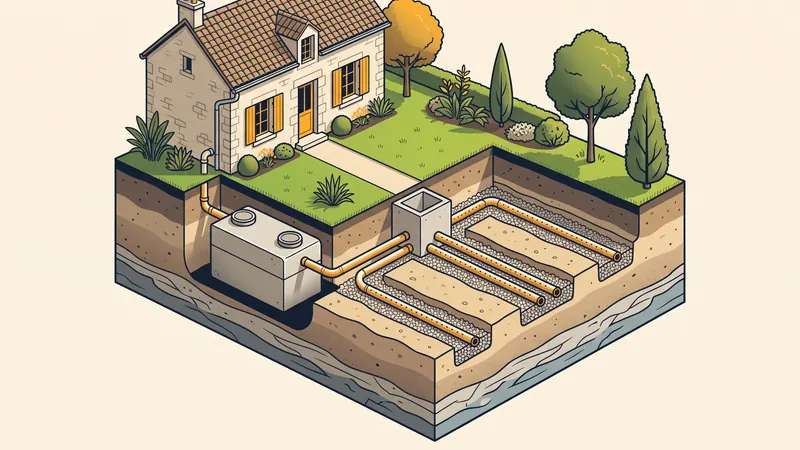

Prix Assainissement Non Collectif (ANC) en 2026 : Tarifs & Guide Complet
Votre terrain n'est pas raccordable au tout-à-l'égout ? Vous devez alors installer un assainissement non collectif (ANC), aussi appelé assainissement individuel ou autonome. Entre la fosse toutes eaux, l'épandage, la micro-station ou le filtre compact, le choix de la filière et son coût soulèvent de nombreuses questions. Dans ce guide complet, STP Terrassement détaille les prix d'un assainissement non collectif en 2026, le rôle du SPANC, la réglementation et les spécificités des sols d'Aix-en-Provence et de la région PACA.

Qu'est-ce qu'un assainissement non collectif (ANC) ?
L'assainissement non collectif désigne tout système de traitement des eaux usées domestiques d'une habitation qui n'est pas raccordée à un réseau public de collecte (le « tout-à-l'égout »). Il est obligatoire dès lors qu'aucun réseau collectif ne dessert la parcelle. L'installation doit collecter, prétraiter puis traiter l'ensemble des eaux usées de la maison (eaux-vannes des WC et eaux ménagères de la cuisine et de la salle de bain) avant leur évacuation dans le sol ou le milieu naturel.
Avant tout projet, une étude de filière (étude de sol et de perméabilité) est obligatoire. Elle détermine la nature du sol, sa capacité d'infiltration et oriente le choix de la filière la mieux adaptée. C'est sur cette base que le projet sera soumis au SPANC pour validation.
Le rôle du SPANC
Le SPANC (Service Public d'Assainissement Non Collectif) est le service communal ou intercommunal qui encadre les installations d'ANC. Son rôle est double :
- Contrôle de conception : avant les travaux, le SPANC vérifie que le projet (étude de filière, plans, filière choisie) respecte la réglementation et le sol de la parcelle.
- Contrôle de réalisation : pendant le chantier, avant remblaiement, un agent vient vérifier la bonne exécution de l'installation (cuve, lit de pose, raccordements, ventilation).
- Contrôle périodique de bon fonctionnement : tous les 4 à 10 ans selon les communes, pour vérifier l'entretien et l'absence de pollution.

Prix d'un assainissement non collectif par filière en 2026
Le coût d'un ANC dépend avant tout de la filière retenue, elle-même imposée par la nature du sol. Voici les fourchettes de prix d'une installation complète posée (cuve, terrassement, raccordements) constatées en 2026 en région PACA :
| Filière d'assainissement | Prix complet posé (TTC) | Surface au sol |
|---|---|---|
| Fosse toutes eaux + épandage (tranchées) | 6 000 - 10 000 € | Importante (60 à 200 m²) |
| Fosse toutes eaux + filtre à sable drainé | 7 000 - 11 000 € | Moyenne (25 à 40 m²) |
| Filtre compact (zéolithe / coco) | 8 000 - 12 000 € | Réduite (5 à 20 m²) |
| Micro-station d'épuration agréée | 8 500 - 13 000 € | Très réduite (5 à 10 m²) |
Ces prix s'entendent installation complète posée pour un logement de 4 à 5 pièces principales (équivalent 5 habitants). Ils varient selon l'accessibilité du chantier, la nature du sol et la distance d'évacuation des déblais.
Fosse toutes eaux + épandage
C'est la filière dite « traditionnelle ». La fosse toutes eaux assure le prétraitement (décantation et liquéfaction des matières) ; le traitement se fait ensuite par le sol via des tranchées d'épandage ou, si le sol est peu perméable, par un filtre à sable. Avantages : robustesse, pas d'électricité, entretien limité. Inconvénient : nécessite une grande surface et un sol perméable.
Micro-station d'épuration agréée
La micro-station traite l'ensemble des eaux usées dans une cuve compacte par culture bactérienne (boues activées ou cultures fixées). Avantages : très faible emprise au sol, idéale pour les petites parcelles. Inconvénients : consommation électrique, entretien régulier, occupation continue recommandée (déconseillée en résidence secondaire).
Filtre compact (zéolithe ou fibre de coco)
Le filtre compact associe une fosse toutes eaux à un massif filtrant (zéolithe, fibre de coco, laine de roche). Sans électricité, peu encombrant, il représente un bon compromis pour les terrains réduits. Le média filtrant doit être remplacé périodiquement (tous les 10 à 15 ans environ).
Le détail des postes de coût d'un ANC
Pour comprendre votre devis, voici la décomposition des principaux postes de dépense d'une installation d'assainissement non collectif :
| Poste | Prix indicatif (TTC) |
|---|---|
| Étude de sol et de filière (obligatoire) | 300 - 900 € |
| Terrassement et fouilles | 1 500 - 4 000 € |
| Fourniture de la cuve / fosse | 900 - 5 000 € |
| Lit de pose et sable (granulats) | 400 - 1 200 € |
| Pose, raccordements et ventilation | 1 200 - 3 000 € |
| Contrôle SPANC (conception + réalisation) | 150 - 400 € |
| Remblai et remise en état du terrain | 500 - 1 500 € |
Le terrassement représente souvent le poste le plus variable : en sol calcaire dur, fréquent autour d'Aix-en-Provence, l'usage d'un brise-roche hydraulique peut majorer le coût des fouilles de 20 à 40 %.
Obtenez Votre Devis Assainissement Gratuit
Chez STP Terrassement, nous réalisons votre installation d'assainissement non collectif clé en main à Aix-en-Provence et dans toute la PACA. Devis détaillé, transparent et sans engagement.
Demandez votre devis gratuitRéglementation de l'assainissement non collectif
L'ANC est strictement encadré par la réglementation, notamment l'arrêté du 7 septembre 2009 modifié par l'arrêté du 27 avril 2012 relatif aux prescriptions techniques des installations. Plusieurs règles sont incontournables :
Les distances réglementaires à respecter
- 35 mètres minimum entre l'installation et tout puits, forage ou captage d'eau destinée à la consommation humaine.
- 5 mètres minimum par rapport à l'habitation (notamment pour l'épandage).
- 3 mètres minimum par rapport aux limites de propriété et aux arbres (racines).
- Implantation interdite sous une zone de circulation ou de stationnement de véhicules.
Entretien, vidange et contrôle
L'entretien est une obligation légale. La fosse toutes eaux doit être vidangée par un vidangeur agréé lorsque les boues atteignent 50 % du volume utile (en moyenne tous les 4 ans), avec remise d'un bordereau de suivi des matières de vidange. Les micro-stations exigent un entretien plus fréquent. Le SPANC réalise par ailleurs un contrôle périodique de bon fonctionnement.
Vente immobilière et diagnostic ANC
Lors de la vente d'un bien équipé d'un ANC, un diagnostic ANC réalisé par le SPANC et datant de moins de 3 ans doit être annexé au compromis. En cas de non-conformité, l'acquéreur doit mettre l'installation aux normes dans un délai d'un an après l'achat.
L'assainissement non collectif en PACA et à Aix-en-Provence
La région d'Aix-en-Provence présente des contraintes géologiques qui pèsent directement sur le choix de la filière et le prix :
- Sols calcaires peu perméables : très fréquents, ils rendent l'épandage classique souvent impossible et orientent vers un filtre à sable drainé, un filtre compact ou une micro-station.
- Test de perméabilité indispensable : la méthode Porchet mesure la vitesse d'infiltration de l'eau dans le sol et conditionne le dimensionnement de la filière.
- Terrains en pente : le relief provençal impose souvent des aménagements (postes de relevage, terrassements en gradins) qui augmentent le coût.
- Présence de rocher : les fouilles peuvent nécessiter un brise-roche, allongeant la durée du chantier.
Exemple de chantier réel à Simiane-Collongue
Installation d'une micro-station près d'Aix-en-Provence
Projet : Remplacement d'une ancienne fosse non conforme par une micro-station agréée pour une maison de 5 pièces.
Localisation : Secteur de Simiane-Collongue, à proximité d'Aix-en-Provence.
Contexte : Terrain en pente de 600 m², sol calcaire à faible perméabilité (test Porchet < 15 mm/h), épandage classique impossible. Diagnostic ANC du SPANC ayant signalé une non-conformité avec risque sanitaire.
Solution STP : Après une étude de filière validant la micro-station, nous avons réalisé le terrassement (passage de brise-roche sur 1 journée pour traverser le banc calcaire), posé la cuve sur un lit de sable stabilisé, raccordé l'habitation et installé la ventilation primaire et secondaire. Le SPANC a contrôlé la réalisation avant remblaiement.
Résultat : Installation conforme et réceptionnée, facture finale de 11 200 € TTC (étude, terrassement, micro-station, contrôle et remise en état du terrain inclus), parfaitement alignée sur le devis initial grâce à l'anticipation du banc rocheux.
Les erreurs courantes à éviter
- Choisir la filière avant l'étude de sol. Sans étude de perméabilité, on risque un dimensionnement inadapté et un refus de conception par le SPANC.
- Démarrer les travaux sans validation du SPANC. Une installation non contrôlée peut être déclarée non conforme et imposer une reprise coûteuse.
- Sous-estimer la surface nécessaire à un épandage. Sur petite parcelle ou sol calcaire, l'épandage est souvent impossible : il faut prévoir un filtre compact ou une micro-station.
- Installer une micro-station en résidence secondaire. Les bactéries ont besoin d'un apport régulier d'eaux usées : une occupation discontinue déséquilibre le traitement.
- Négliger l'entretien et les vidanges. Une fosse non vidangée colmate l'épandage, provoque des odeurs et peut imposer le remplacement complet de la filière.
- Oublier la ventilation. Une ventilation primaire et secondaire (extraction en toiture) est obligatoire pour évacuer les gaz et éviter les nuisances olfactives.
Questions fréquentes
Quel est le prix d'un assainissement non collectif en 2026 ?
Le prix d'un assainissement non collectif complet posé se situe entre 6 000 et 13 000 euros TTC en 2026. Une fosse toutes eaux avec épandage coûte 6 000 à 10 000 euros, un filtre compact 8 000 à 12 000 euros et une micro-station agréée 8 500 à 13 000 euros, hors étude de sol et terrassement complexe.
L'étude de sol est-elle obligatoire pour un ANC ?
Oui, l'étude de filière (étude de sol et de perméabilité) est exigée par le SPANC pour dimensionner et valider la filière d'assainissement. Elle coûte entre 300 et 900 euros et conditionne le contrôle de conception du projet.
Quel est le rôle du SPANC ?
Le SPANC (Service Public d'Assainissement Non Collectif) contrôle la conception du projet avant travaux, puis la bonne réalisation de l'installation avant remblaiement. Il assure aussi un contrôle périodique de bon fonctionnement, en général tous les 4 à 10 ans selon les communes.
Quelle filière d'assainissement choisir ?
Le choix dépend du sol, de la surface disponible et du budget. La fosse toutes eaux avec épandage convient aux terrains perméables et spacieux, le filtre compact aux petites parcelles, et la micro-station agréée aux terrains contraints ou à occupation continue. L'étude de filière oriente le choix.
Quelles sont les distances réglementaires à respecter pour un ANC ?
L'installation doit se situer à au moins 35 mètres d'un puits ou captage d'eau potable, à 5 mètres de l'habitation et à 3 mètres des limites de propriété et des arbres. Ces distances sont fixées par l'arrêté du 7 septembre 2009 modifié et l'arrêté du 27 avril 2012.
À quelle fréquence vidanger une fosse toutes eaux ?
La vidange d'une fosse toutes eaux est nécessaire lorsque le volume de boues atteint 50 % du volume utile, soit en moyenne tous les 4 ans pour un foyer standard. La vidange coûte entre 150 et 300 euros et doit être réalisée par un vidangeur agréé remettant un bordereau de suivi.
Faut-il un diagnostic ANC lors d'une vente immobilière ?
Oui, lors de la vente d'un bien équipé d'un assainissement non collectif, un diagnostic ANC réalisé par le SPANC de moins de 3 ans doit être joint au dossier de diagnostic technique. En cas de non-conformité, l'acquéreur dispose d'un an après la vente pour mettre l'installation aux normes.
Pourquoi l'ANC est-il particulier en PACA et à Aix-en-Provence ?
Les sols calcaires de la région d'Aix-en-Provence sont souvent peu perméables et les terrains fréquemment en pente. Un test de perméabilité (méthode Porchet) est indispensable et oriente souvent vers un filtre à sable drainé, un filtre compact ou une micro-station plutôt qu'un épandage classique.
Pour aller plus loin
Pourquoi faire appel à STP Terrassement
Confier votre assainissement non collectif à STP Terrassement, c'est s'appuyer sur une entreprise locale implantée à Simiane-Collongue (13109) et intervenant chaque jour à Aix-en-Provence et dans toute la région PACA. Spécialistes du terrassement et du VRD & assainissement, nous maîtrisons toutes les filières (fosse toutes eaux, épandage, filtre à sable, filtre compact, micro-station agréée) et travaillons en coordination directe avec le SPANC, de l'étude de filière à la réception. Nous disposons d'un parc d'engins récents, d'une garantie décennale en cours de validité et de plus de 15 ans d'expérience sur les sols calcaires provençaux. Nos devis sont détaillés, gratuits et sans engagement, et nous tenons les délais comme le budget validé. Demandez votre devis gratuit en ligne ou appelez-nous au 07 45 14 20 49 pour échanger avec un chargé d'affaires. Vous pouvez aussi nous joindre via notre page contact.